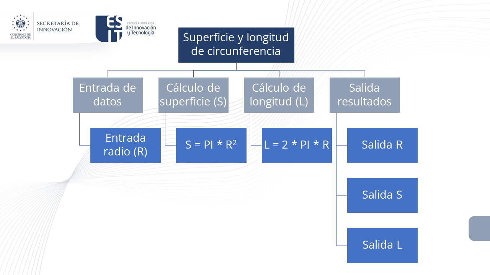

1. Conceptos Fundamentales de Programación
4. Representación de un Algoritmo
Una computadora no tiene capacidad para solucionar problemas más que cuando se le proporcionan los sucesivos pasos a realizar. Estos pasos sucesivos que indican las instrucciones a ejecutar por la máquina constituyen, como ya conocemos, el algoritmo. La información proporcionada al algoritmo constituye su entrada y la información producida por el algoritmo constituye su salida.
Diseño del Algoritmo
Los problemas complejos se pueden resolver más eficazmente con la computadora cuando se rompen en sub-problemas que sean más fáciles de solucionar que el original. Es el método de divide y vencerás (divide and conquer), mencionado anteriormente, y que consiste en dividir un problema complejo en otros más simples. Así, el problema de encontrar la superficie y la longitud de un círculo se puede dividir en tres problemas más simples o sub-problemas.

Escritura del Algoritmo
EL sistema para describir (“escribir”) un algoritmo consiste en realizar una descripción paso a paso con un lenguaje natural del citado algoritmo. Recordemos que un algoritmo es un método o conjunto de reglas para solucionar un problema. En cálculos elementales estas reglas tienen las siguientes propiedades:
- deben ir seguidas de alguna secuencia definida de pasos hasta que se obtenga un resultado coherente,
- sólo puede ejecutarse una operación a la vez.
El flujo de control usual de un algoritmo es secuencial; consideremos el algoritmo que responde a la pregunta:
¿Qué hacer para ver la película de Harry Potter?
La respuesta es muy sencilla y puede ser descrita en forma de algoritmo general de modo similar a:
ir al cine
comprar una entrada (billete o ticket)
ver la película
regresar a casaEl algoritmo consta de cuatro acciones básicas, cada una de las cuales debe ser ejecutada antes de realizar la siguiente. En términos de computadora, cada acción se codificará en una o varias sentencias que ejecutan una tarea particular.
Para representar un algoritmo se debe utilizar algún método que permita independizar dicho algoritmo del lenguaje de programación elegido. Ello permitirá que un algoritmo pueda ser codificado indistintamente en cualquier lenguaje. Para conseguir este objetivo se precisa que el algoritmo sea representado gráfica o numéricamente, de modo que las sucesivas acciones no dependan de la sintaxis de ningún lenguaje de programación, sino que la descripción pueda servir fácilmente para su transformación en un programa, es decir, su codificación. Los métodos usuales para representar un algoritmo son:
Pseudocódigo
El pseudocódigo es una descripción informal de un algoritmo que usa una combinación de lenguaje natural y estructuras de programación. No se ejecuta en una computadora, pero ayuda a los programadores a planificar y comunicar la lógica de su código.
Características
- Legibilidad: Es fácil de leer y entender para humanos, independientemente de su conocimiento de un lenguaje de programación específico.
- Flexibilidad: No está limitado por la sintaxis de ningún lenguaje, por lo que puede adaptarse libremente a la necesidad del problema.
Inicio
Leer número1, número2
Si número1 > número2 Entonces
Imprimir "Número1 es mayor"
Sino
Imprimir "Número2 es mayor o igual"
FinSi
FinDiagrama de Flujo
Un diagrama de flujo es una representación gráfica de un algoritmo o proceso. Utiliza diversos símbolos para denotar diferentes tipos de acciones o pasos y líneas de flujo para indicar la secuencia de los pasos.
Símbolos Comunes
- Óvalo: Inicio y fin.
- Rectángulo: Proceso o acción.
- Rombo: Decisión o condición.
- Paralelogramo: Entrada y salida.
- Flechas: Indican el flujo de control.
Obra publicada con Licencia Creative Commons Reconocimiento Compartir igual 4.0